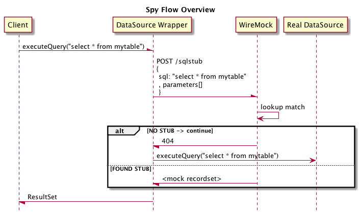

What does it do?
This library provides JDBC DataSource wrapper (similar to P6Spy) in order to spy on or mock database operations. It redirects JDBC operations to an HTTP server, so you can use WireMock or similar HTTP Mock Servers to define the actual Mock behaviour. The major advantage of this approach is that we can reuse existing technologies to remotely stub a JDBC endpoint.

Getting Started
Please checkout the project's README
Support or Contact
Please use Github Issues to submit bug reports, feature requests or ask questions.